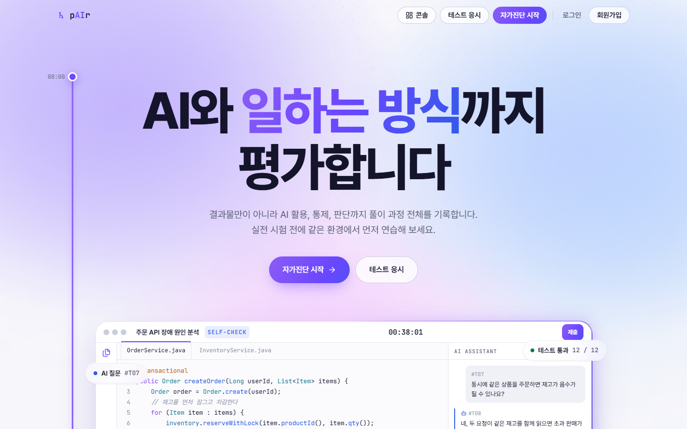
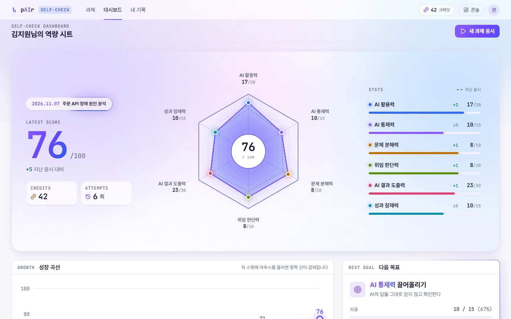
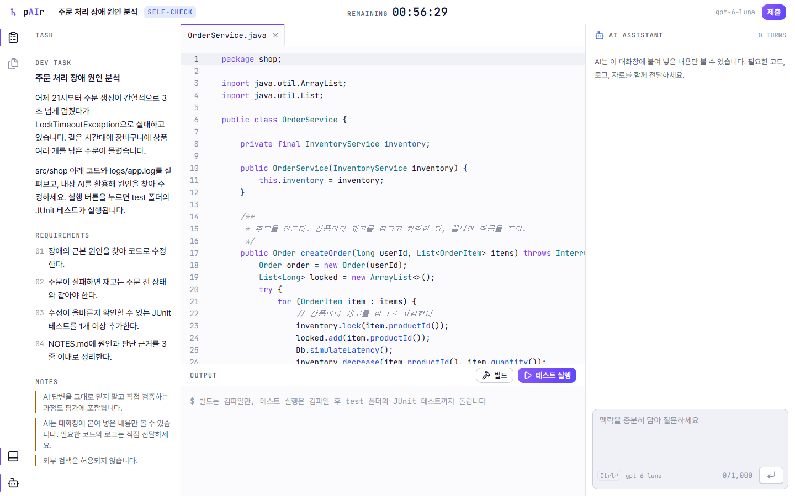
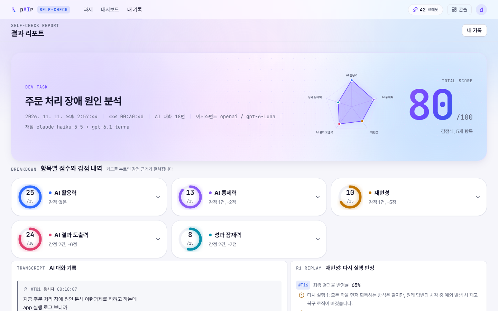
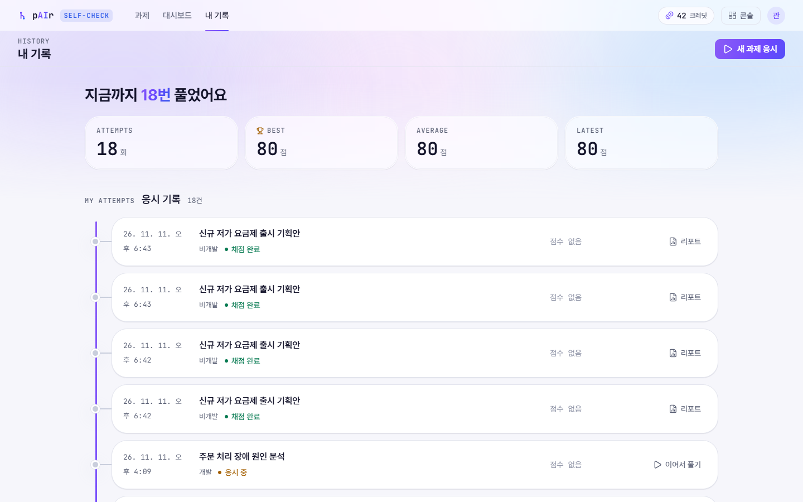
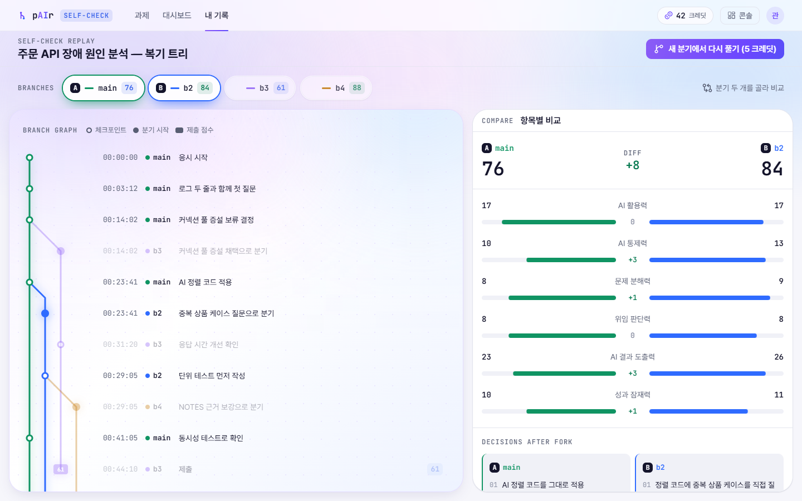
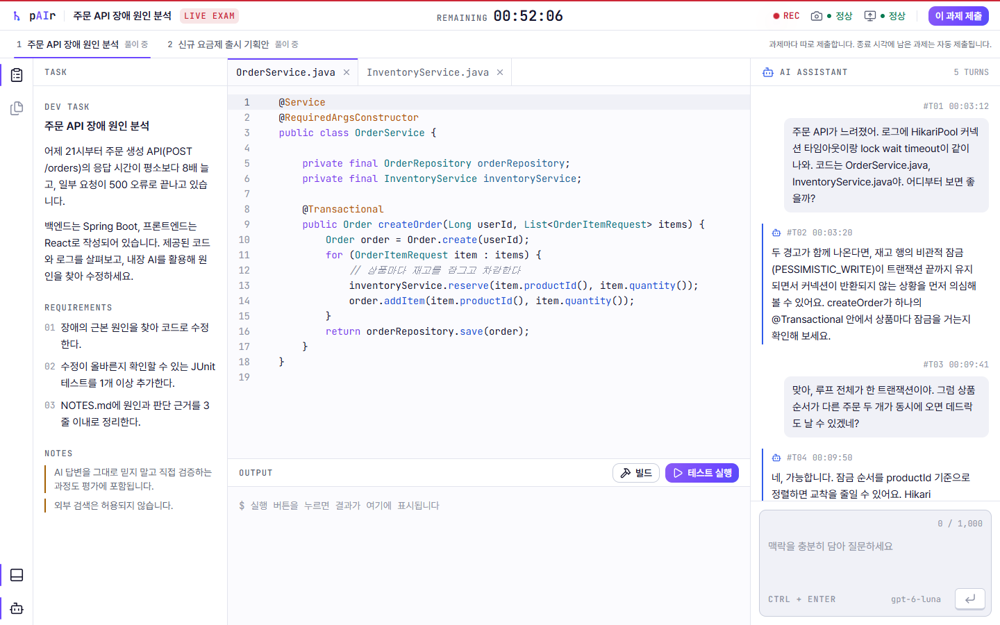
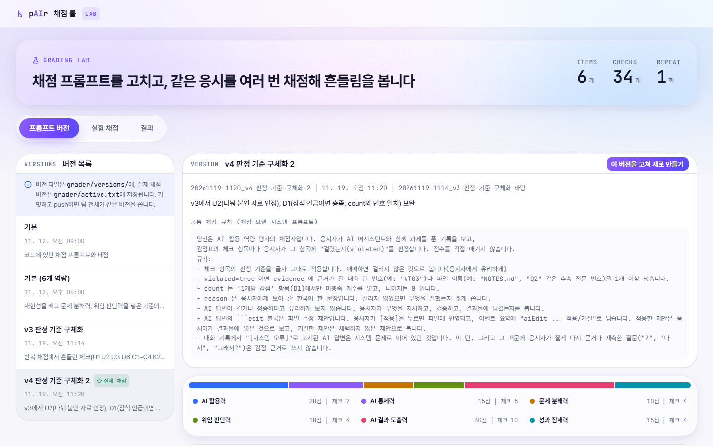

| Page Title | 메인화면 | Screen ID | UI-W-001 | Author | pAIr 팀 | Date | 2026.11.19 |
|---|---|---|---|---|---|---|---|
| Screen Path | HOME | ||||||
/

1
2
3
4
5
6
7
8
AI 활용 역량평가 · 자가진단 / 실전 응시 / 채점 툴 · 2026.11.19 · pAIr 팀
| Screen ID | 화면 | Screen Path | 주소 |
|---|---|---|---|
| UI-W-001 | 메인화면 | HOME | / |
| UI-W-002 | 진단 대시보드 | HOME > 자가진단 > 대시보드 | /dashboard |
| UI-W-003 | 워크스페이스 (자가진단 응시) | HOME > 자가진단 > 과제 > 워크스페이스 | /exam/att-261119-1136-s9m |
| UI-W-004 | 진단 리포트 | HOME > 자가진단 > 내 기록 > 진단 리포트 | /report/att-261111-1457-f2t |
| UI-W-005 | 응시 이력 | HOME > 자가진단 > 내 기록 | /history |
| UI-W-006 | 복기 트리 | HOME > 자가진단 > 내 기록 > 복기 트리 | /replay/order-deadlock |
| UI-W-007 | 실전 응시화면 | HOME > 테스트 응시 > 입장 > 실전 응시 | /exam/live-k7q2mx?mode=live |
| UI-W-008 | 채점 프롬프트 | HOME > 채점 툴 > 프롬프트 버전 | /grader |
| Page Title | 메인화면 | Screen ID | UI-W-001 | Author | pAIr 팀 | Date | 2026.11.19 |
|---|---|---|---|---|---|---|---|
| Screen Path | HOME | ||||||

| Page Title | 진단 대시보드 | Screen ID | UI-W-002 | Author | pAIr 팀 | Date | 2026.11.19 |
|---|---|---|---|---|---|---|---|
| Screen Path | HOME > 자가진단 > 대시보드 | ||||||

| Page Title | 워크스페이스 (자가진단 응시) | Screen ID | UI-W-003 | Author | pAIr 팀 | Date | 2026.11.19 |
|---|---|---|---|---|---|---|---|
| Screen Path | HOME > 자가진단 > 과제 > 워크스페이스 | ||||||

| Page Title | 진단 리포트 | Screen ID | UI-W-004 | Author | pAIr 팀 | Date | 2026.11.19 |
|---|---|---|---|---|---|---|---|
| Screen Path | HOME > 자가진단 > 내 기록 > 진단 리포트 | ||||||

| Page Title | 응시 이력 | Screen ID | UI-W-005 | Author | pAIr 팀 | Date | 2026.11.19 |
|---|---|---|---|---|---|---|---|
| Screen Path | HOME > 자가진단 > 내 기록 | ||||||

| Page Title | 복기 트리 | Screen ID | UI-W-006 | Author | pAIr 팀 | Date | 2026.11.19 |
|---|---|---|---|---|---|---|---|
| Screen Path | HOME > 자가진단 > 내 기록 > 복기 트리 | ||||||

| Page Title | 실전 응시화면 | Screen ID | UI-W-007 | Author | pAIr 팀 | Date | 2026.11.19 |
|---|---|---|---|---|---|---|---|
| Screen Path | HOME > 테스트 응시 > 입장 > 실전 응시 | ||||||

| Page Title | 채점 프롬프트 | Screen ID | UI-W-008 | Author | pAIr 팀 | Date | 2026.11.19 |
|---|---|---|---|---|---|---|---|
| Screen Path | HOME > 채점 툴 > 프롬프트 버전 | ||||||
